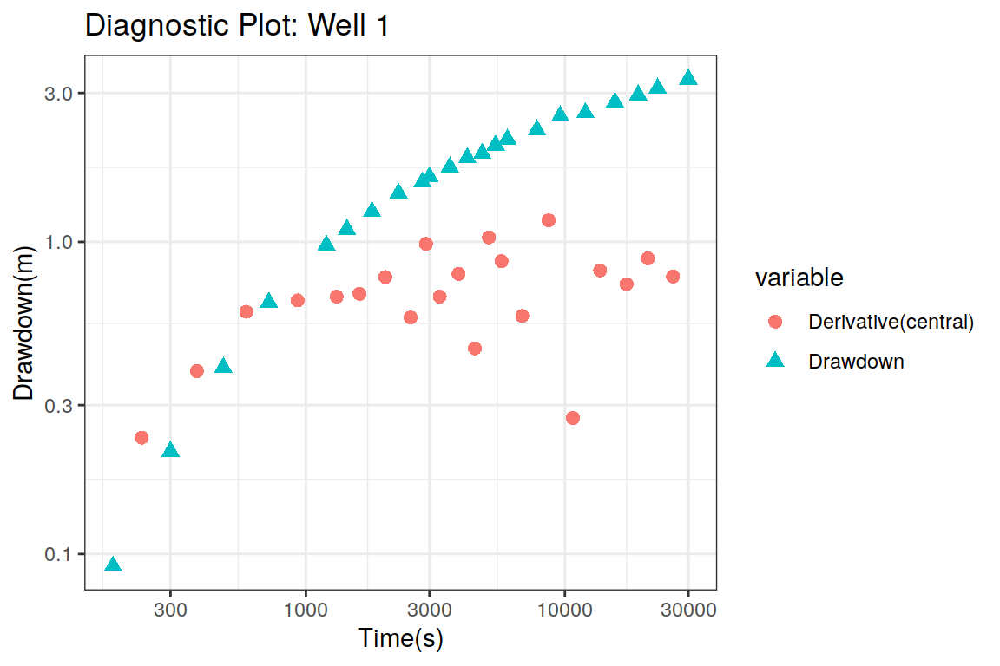
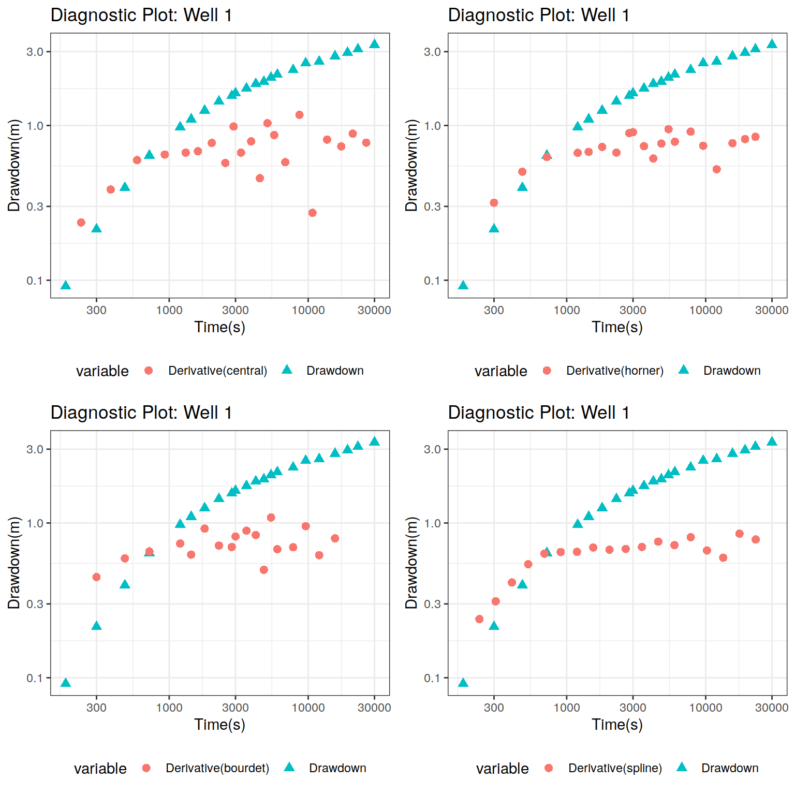
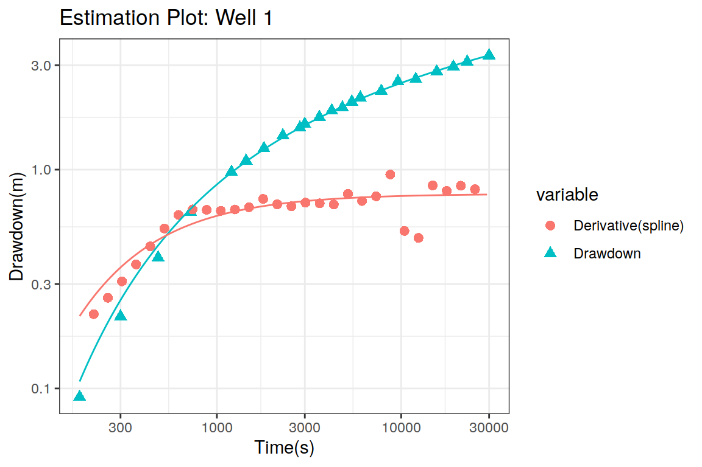
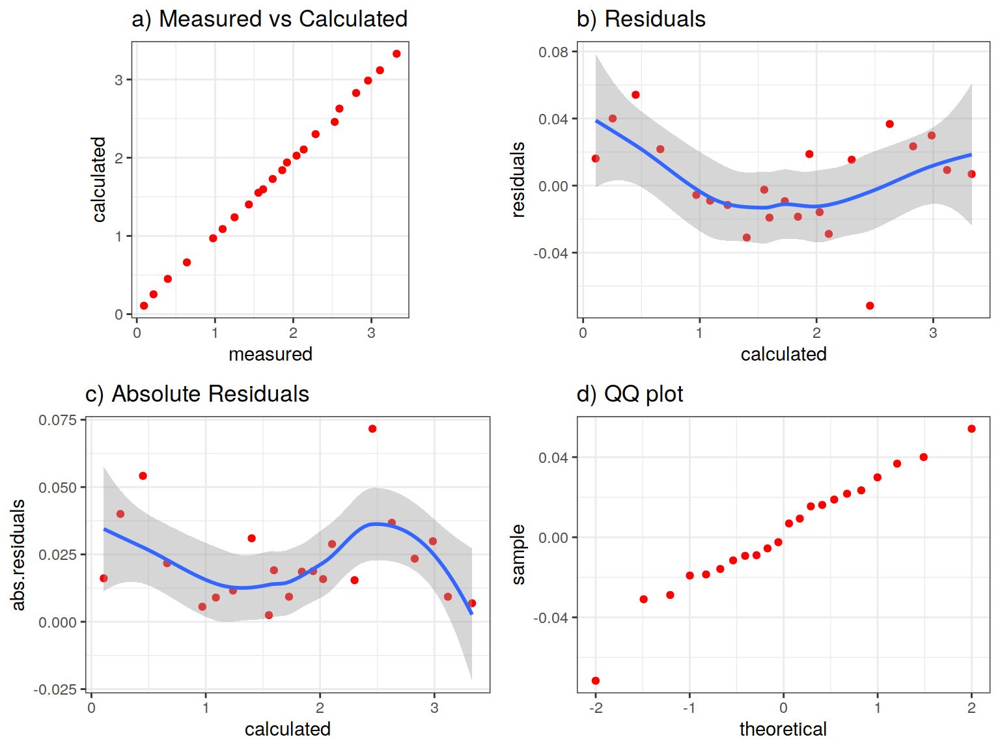

vignettes/intro_pumpingtest.Rmd
intro_pumpingtest.RmdThis document defines the basic concepts, governing equations, numerical procedures, organization of functions and show some examples of analysis and evaluation of pumping test data using the package PumpingTest.
A pumping test is a field experiment in which water is extracted from well at a controlled rate and the change in water level (drawdown) is measured in one or more observation wells and optionally in the pumped well. This information from pumping tests are used to estimate the hydraulic properties of aquifers (Transmisivity and Storage coefficient), evaluate the well performance and identify aquifer boundaries. Aquifer test and aquifer performance test (APT) are other terms to designate a pumping test.
The analysis and evaluation of pumping test data are necessary to propose solutions to specific groundwater problems. In the analysis stage, the measurements of the response of the aquifer system (drawdown) are used to understand the structure and functioning of the flow system. Specifically, the definition of the aquifer type, identification of the sources and sinks, and the estimation of the hydraulic parameters of the aquifer unit are the main results in this stage. The conventional estimation of the hydraulic parameters is based on the use of graphical methods and tables, but this procedure can be approached as a nonlinear regression problem if analytical expressions of the response of the aquifer to the water extraction are available.
In the evaluation stage, the analytical model identified as the most representative of the aquifer conditions along with the hydraulic parameters (Transmissivity and Storage coefficient) are used in the prediction of the drawdown in space and/or time. These predictions are critical to determine the effect of water extraction on the vecinity of the pumping well under real or hypothetical conditions.
The general description of the flow of water in porous media is given by the continuity equation in cylindrical coordinates: \[ \frac{1}{r}\frac{\partial}{\partial r}\left( r\frac{\partial s}{\partial r} \right) = \frac{S}{T}\frac{\partial s}{\partial t} \]
where \(s\) is the drawdown, \(r\) is the distance between the pumping and observation well, \(t\) is the time, \(Q\) is the pumping rate, \(q\) is a term to include all the sources and sinks, \(S\) is the storage coefficient and \(T\) is the transmissivity.
The general solution of the previous equation can be expressed as: \[ s(r,t) = \frac{Q}{4 \pi T} W(\boldsymbol{\theta}) \] where \(W(\boldsymbol{\theta})\) is the so called well function and \(\boldsymbol{\theta}\) is a vector of parameters (including Transmissivity, Storage coefficient and others). The importance of the well function lies in that this describes the nondimensional change of the drawdown with respect to time, and therefore the previous equation implies that the drawdown for a specific well can be obtained via rescaling of the corresponding well function.
There are few cases where analytical expression of the well function \(W(\boldsymbol{\theta})\) can be obtained. EXAMPLES?. This implies that for the majority of cases this well function is obtained using numerical methods. The preferred numerical method used to solve the original continuity equation in cylindrical coordinates is the Laplace Transform (Doetsch 1974). The basic idea of this transform is to convert a partial differential equation into an ordinary differential equation by removing the time variable. Once the ordinary differential equation is solved, then the inverse Laplace Transform is applied to recover the solution in the original space. The conventional approach to recover this solution is based on visual inspection of a table of inverse transforms of a set of functions but in most cases, it is not possible to obtain a close analytical expression for the solution of the ODE, and that is why the numerical approach is used. The inverse Laplace Transform is calculated using the Stehfest algorithm Stehfest (1970) which has proven to be stable for the calculations required for the estimation of the pumping tests.
The PumpingTest package is based on the definition of a S3 class called pumping_test that is used to store the following information:
There are basic functions associated with this S3 class including:
The fit.optimization function can be used with the following optimization methods:
| Optimization method | Package |
|---|---|
| Nonlinear Regression | minpack.lm |
| Quasi-Newton method | optim |
| Simulated Annealing | GenSA |
| Genetic Algorithms | GA |
| Particle Swarm Optimization | pso |
| Differential Evolution | DEoptim |
The fit.samping function can be used with the following MCMC methods:
This package includes different types of plots. The diagnostic plot created using the plot function is of one of the most important tools for the analysis of pumping test data, and it includes the plot of the drawdown in function of time and the plot of the derivative of drawdown with respect to the log of time in the same figure. From the variation showed by the derivative it is possible to identify the different flow regime present during the test and therefore the most likely models that explains the observed variations in drawdown (Duong 1989). In the estimation plot, the drawdown and its derivative with respest to time and their corresponding curves defined with the fitted parameters are shown in the sampe figure. This is an important tool to assess the fit provided by the estimaed parameters, and to identify the measurements that do not follow the fitted model. If the hydrogeologist determines that the obtained fit does not represent the observed data, then the problematic measurements can be removed and the estimation starts again.
The pumping_test package includes the following analytical solutions that can be used in different types of geological conditions. The base names of the solutions included in this package are the following:
| Solution Name | Conditions |
|---|---|
| theis | Confined aquifer |
| cooper_jacob | Confined aquifer |
| hantush_jacob | Confined Leaky aquifer |
| boulton | Phreatic aquifer |
| cooper | Slug test |
| agarwal | Recovery test |
| agarwal | Wellbore storage |
| general_radial_flow | Fractured aquifer |
| neuzil | Slug test (Pulse) |
| papadopoulous_cooper | Confined aquifer, large diameter well |
| warren_root | double porosity |
| gringarten | Single fracture |
In this package, cach analytical solution is implemented using 6 different functions:
where the name of the analytical solution is added as prefix:
The drawdown data from the pumping test in a confined aquifer is save in the data.frame theis included in the package. This data.frame is loaded using:
This data.frame is composed of two variables:
This drawdown was caused by a well withdrawing water at a pumping rate of
\(Q=1.2\;\; l/s\) which is equivalent to \(Q=1.388 \times 10^{-2}\;\;m^{3}/s\), and located at \(r=250\;\;m\) from the observation well. The pumping_test object is defined using:
## Joining, by = c("t", "s", "variable")
The diagnostic plot is the default option in the plot function, in which the derivative of the drawdown with respect to the logarithm of time is calculated via central differences. The drawdown derivative is very sensitive to the noise present in the drawdown measurements and therefore it is advisable to create the diagnostic plot using different derivative types. In this case, four types of derivatives are used in the diagnostic plots:
library(ggplot2)
library(gridExtra)
p.central <- plot(ptest.theis, dmethod = "central") +
theme(legend.position="bottom")## Joining, by = c("t", "s", "variable")## Joining, by = c("t", "s", "variable")## Joining, by = c("t", "s", "variable")## Joining, by = c("t", "s", "variable")
## TableGrob (2 x 2) "arrange": 4 grobs
## z cells name grob
## 1 1 (1-1,1-1) arrange gtable[layout]
## 2 2 (1-1,2-2) arrange gtable[layout]
## 3 3 (2-2,1-1) arrange gtable[layout]
## 4 4 (2-2,2-2) arrange gtable[layout]The drawdown data appears as black points while the derivative of drawdown is represented as red symbols. In all cases, the derivative shows an increasing behavior up to \(500 \; s\) and then it seems to reach a plateau. However this is not very clear due to the high dispersion showed by the derivative estimates in the case of central finite differences, Horne’s and Bourdet’s approaches. The only stable derivative is the one calculated using the spline approach, specially when \(20-40\) samples are used in the interpolation step (Renard, Glenz, and Mejias 2008).
From the previous figures, it is clear that the derivative of the drawdown with respect to the logarithm of time shows an increasing behavior up to \(t=500\;\;s\) and then it stabilizes with a value of \(0.8\) approximately. This behaviour is typical of a confined aquifer and therefore the Theis solution describes the variation displayed by the drawdown. Now that we know the model to be used to fit the data, let’s estimate the hydraulic parameters.
The function fit is used to estimate the parameters of the model. In the PumpingTest package, most of the models included are parametrized in terms of nuance parameters instead of the hydraulic properties of the aquifer. For the Theis model, the parameters are the slope \(a\) and the intercept \(t_{0}\) of the straight line fitted for the late measurements of drawdown where the logarithm of time is taken as the independent variable. The estimation of these parameters \(a\) and \(t_{0}\) is obtained via nonlinear regression using the fit command:
The output of this command is a list that contains three variables:
Let’s take a look at the values of the nuance parameters accessing the parameters variable:
## $a
## [1] 1.78566
##
## $t0
## [1] 413.0369This shows that the value of \(a=\) 1.7856604 and \(t_{0}=\) 413.0369046. From these values the hydraulic parameters specific for this model are internally calculated by the fit function using the theis_calculate_parameters function and the results are:
## $Tr
## [1] 0.001425104
##
## $Ss
## [1] 2.115116e-05
##
## $radius_influence
## [1] 2843.458Tr <- ptest.fit$hydraulic_parameters$Tr
Ss <- ptest.fit$hydraulic_parameters$Ss
Ri <- ptest.fit$hydraulic_parameters$radius_influencewhich means that the transmissivity is equal to 1.43e-03 m2/s, the storage coefficient is 2.12e-05, and the radius of influence is equal to 2.84e+03 m or 2.84e+00 km.
Using the values of the hydraulic parameters, now it is possible to create the estimation plot. This requires the assignment of the results of the fitting procedure to the pumping_test object which is done using the following auxiliary functions:
## Joining, by = c("t", "s", "variable")
The visual inspection of the previous figure shows that there is a good fit between the model and the drawdown measurements and even the derivative. These are good news but it is critical to be sure that the fitted model satisfy the assumptions behind a nonlinear regression model. If these conditions are not checked then it is not possible to be sure that the model is appropiate and therefore the predictions based upon these hydraulic parameters are correct. The tools to check the fitted model are presented in the next section.
The model fitted with nonlinear regression should satisfy the following conditions:
These assumptions can be checked informally using specialized plots which can be created using the plot function:
## Joining, by = c("t", "s", "variable")## `geom_smooth()` using method = 'loess' and formula 'y ~ x'
## `geom_smooth()` using method = 'loess' and formula 'y ~ x'
## TableGrob (2 x 2) "arrange": 4 grobs
## z cells name grob
## 1 1 (1-1,1-1) arrange gtable[layout]
## 2 2 (1-1,2-2) arrange gtable[layout]
## 3 3 (2-2,1-1) arrange gtable[layout]
## 4 4 (2-2,2-2) arrange gtable[layout]In the previous figure, each condition is checked by each plot. The first assumption of the fitted model can be checked using the a scatterplot of the measured and calculated drawdown (upper left plot). In this case the reproduction of the measured values is good as seen by the value of the correlation coefficient and the fact that all values lie close to the diagonal red line. The second assumption can be checked using the plot located on the upper right part of the figure. This shows a scatterplot between the calculated drawdown and the residuals, which shows that there are no relationship between them (no trend in the scatterplot) and the residual values lie around 0 (zero mean residuals). The local mean of the residua (red line) oscillates around 0. The variance of the residuals can be checked indirectly using the absolute residuals (lower left), which shows that there are no large variations. The fourth condition can be checked with a normal quantile plot as seen in the lower right part of the figure. There are deviations from the red line only at the tails of the residual distribution. From the previous figure, it is clear the all conditions of the nonlinear regression model are met and therefore the hydraulic parameters can be used with confidence.
In this last step, the uncertainty in the estimates of the hydraulic parameters is quantified using a simple bootstrapp approach. This method is based on the defining a new drawdown curve using a new set of residuals obtained form the resampling with replacement of the original residuals. Then the hydraulic parameters are estimated for all the generated curves and with the results a probability density function for each parameter can be defined. Estimates of confidence intervals can be derived nonparametrically from these probability density functions.
The confidence intervals of the hydraulic parameters can be estimated using the confint function:
ptest.theis.ci <- confint(ptest.theis, level = c(0.025, 0.975),
method = "bootstrap", d = 20,
neval = 100, seed = 12346)The results of the estimation are stored in the variable ptest.test.ci, and these results must be assigned to the ptest.theis object:
hydraulic.parameters(ptest.theis) <- ptest.theis.ci$hydraulic.parameters
hydraulic.parameter.names(ptest.theis) <- ptest.theis.ci$hydraulic.parameters.names
estimated(ptest.theis) <- TRUEThe confidence intervals of the hydraulic parameters for the pumping test applied in a confined aquifer are shown in the following table.
| 2.5% | 97.5% | |
|---|---|---|
| Tr | 0.0013984 | 1.44570e-03 |
| Ss | 0.0000204 | 2.18000e-05 |
| radius_influence | 2779.4235685 | 2.91425e+03 |
The uncertainty plot can be created using the plot function:
## Joining, by = c("t", "s", "variable")The previous figure shows along the diagonals the probability density function of the hydraulic parameters estimated using 100 boostrap realizations. The probability distributions of these parameters are unimodal and nearly symmetric in all cases. On the off-diagonals, the scatterplots of the hydraulic parameters are shown where it is clear that the transmissivity and storage coefficient are not independent of each other, and this implies that in reality there is one single parameter defining the model. This parameter is called hydraulic diffusivity which is defined as the ratio of the transmissivity to the storage coefficient.
Christen, J. Andr’es, and Colin Fox. 2010. “A General Purpose Sampling Algorithm for Continuous Distributions (the T-Walk).” Bayesian Analysis 5 (2). Institute of Mathematical Statistics: 263–81. https://doi.org/10.1214/10-ba603.
Doetsch, G. 1974. Introduction to the Theory and Application of the Laplace Transformation. Springer-Verlag. https://books.google.com.co/books?id=AreGQgAACAAJ.
Duong, Anh N. 1989. “A New Set of Type Curves for Well-Test Interpretation with the Pressure/Pressure-Derivative Ratio.” SPE Formation Evaluation 4 (02). Society of Petroleum Engineers (SPE): 264–72. https://doi.org/10.2118/16812-pa.
Renard, Philippe, Damian Glenz, and Miguel Mejias. 2008. “Understanding Diagnostic Plots for Well-Test Interpretation.” Hydrogeology Journal 17 (3). Springer Nature: 589–600. https://doi.org/10.1007/s10040-008-0392-0.
Stehfest, Harald. 1970. “Algorithm 368: Numerical Inversion of Laplace Transforms [D5].” Communications of the ACM 13 (1). Association for Computing Machinery (ACM): 47–49. https://doi.org/10.1145/361953.361969.